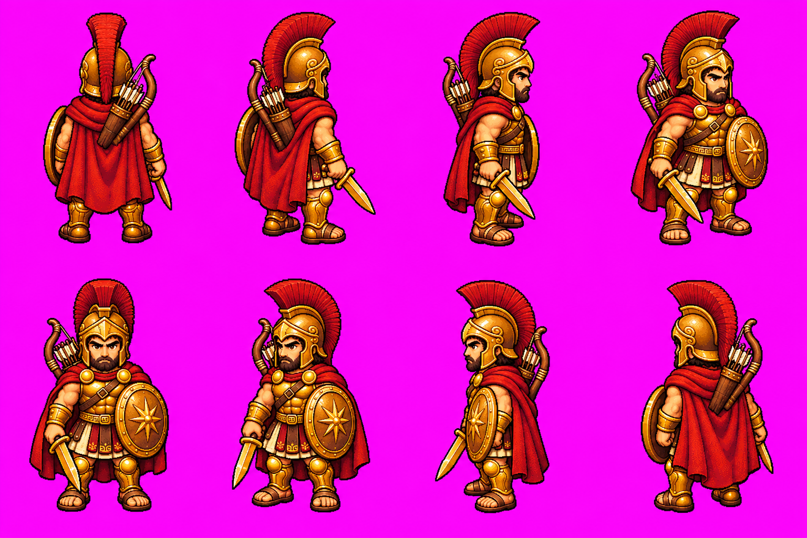
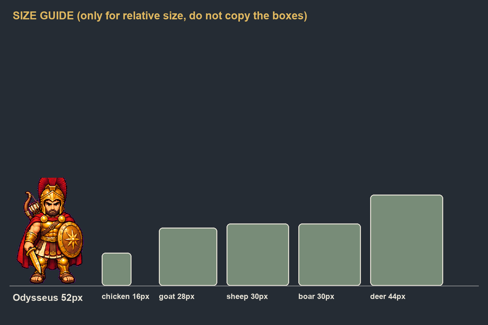
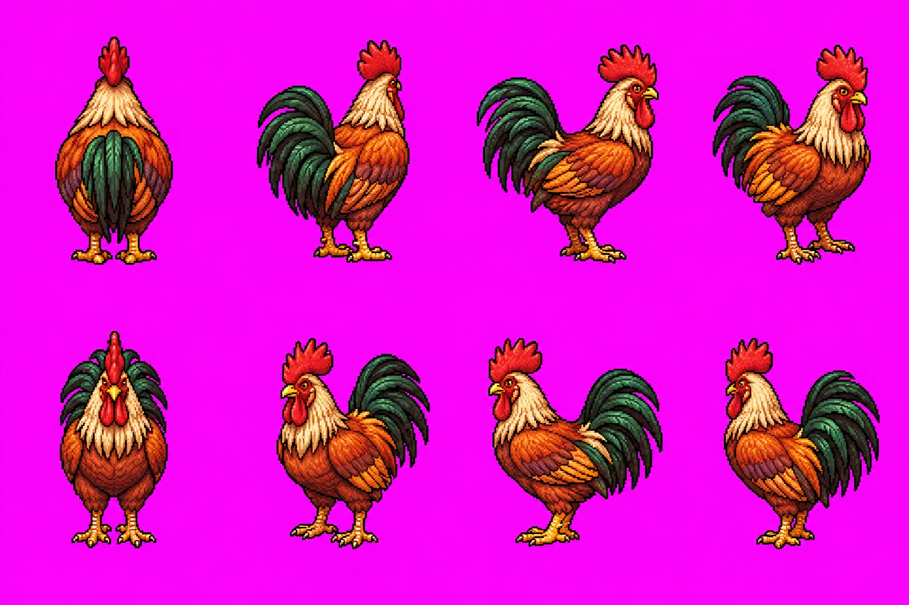
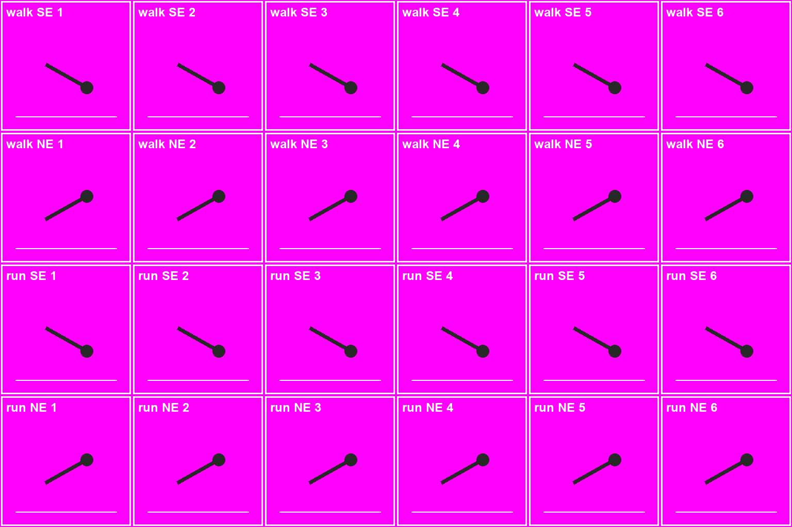
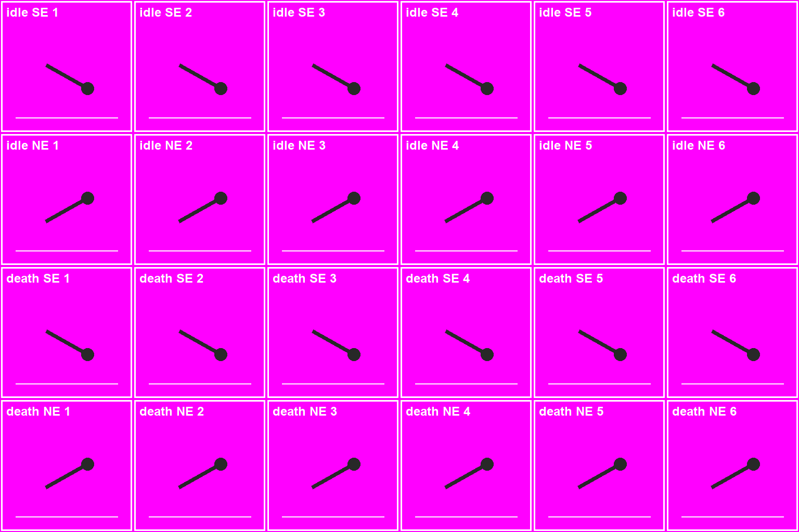
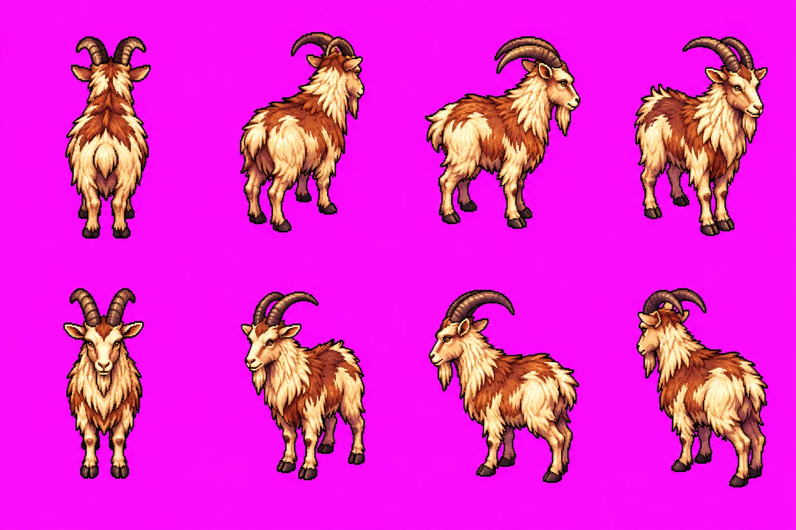
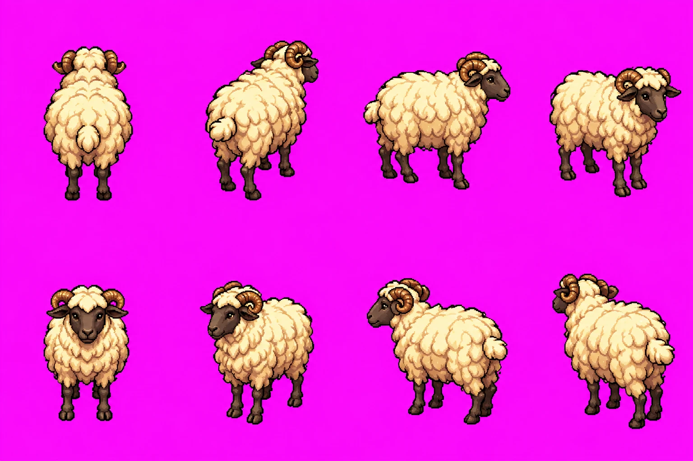

11. 멧돼지 — 걷기·달아나기

저장 이름: received/boar_move.png
동물마다 기본 8방향을 먼저 받고, 받은 그림을 received/<종류>_base.png로 저장한 뒤 이 쪽을 새로고침하면 다음 요청의 첨부 그림이 보인다.


저장 이름: received/chicken_base.png


저장 이름: received/chicken_move.png

저장 이름: received/chicken_idle.png
저장 이름: received/goat_base.png

저장 이름: received/goat_move.png
저장 이름: received/goat_idle.png
저장 이름: received/sheep_base.png

저장 이름: received/sheep_move.png
저장 이름: received/sheep_idle.png
저장 이름: received/boar_base.png
저장 이름: received/boar_move.png
저장 이름: received/boar_idle.png
저장 이름: received/deer_base.png

저장 이름: received/deer_move.png
저장 이름: received/deer_idle.png
저장 이름: received/food_icons.png